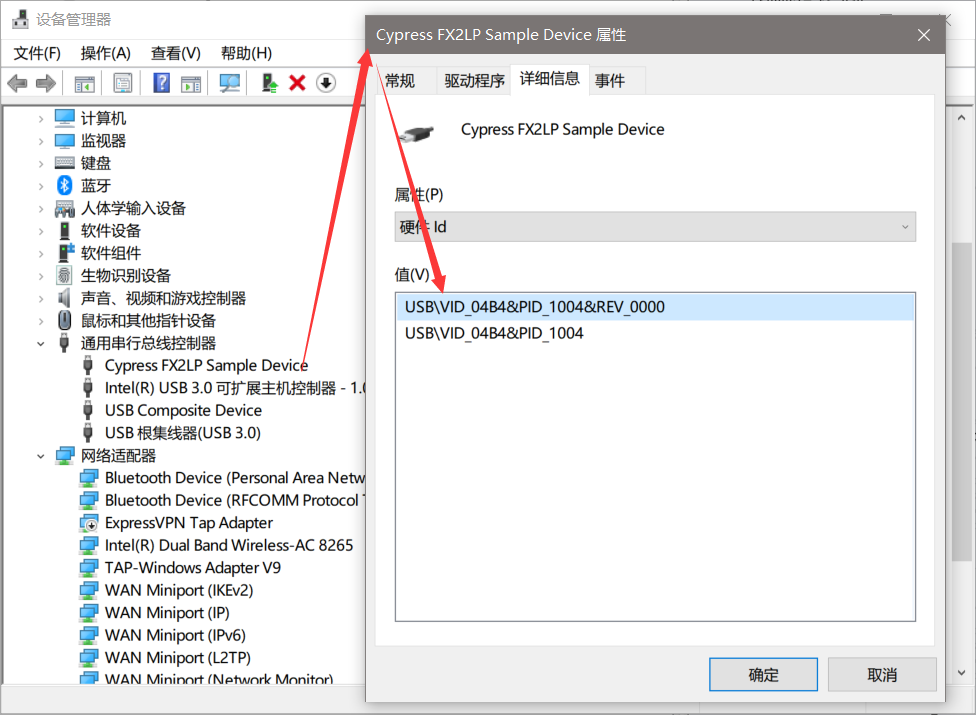
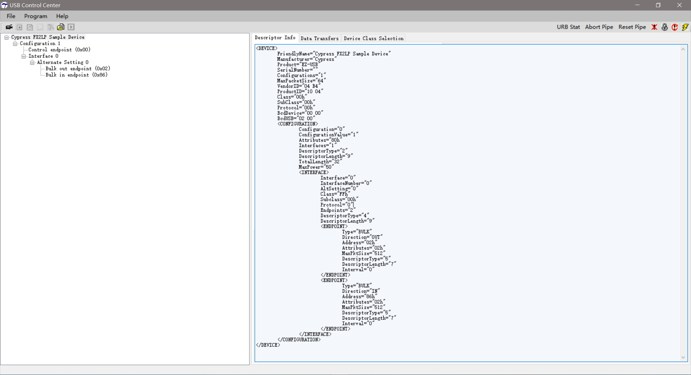
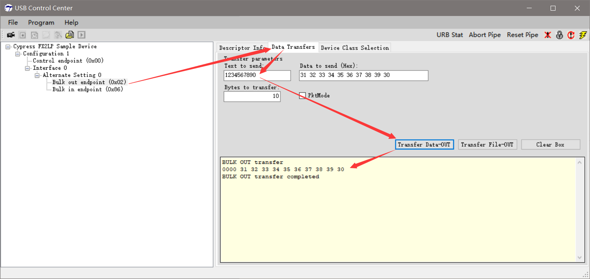
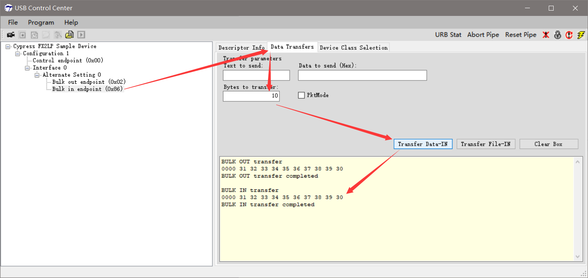
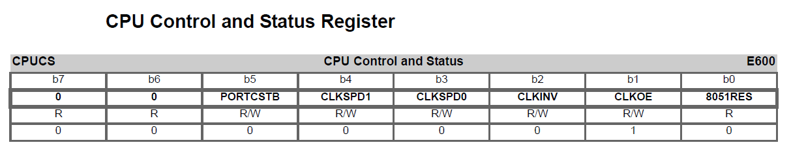
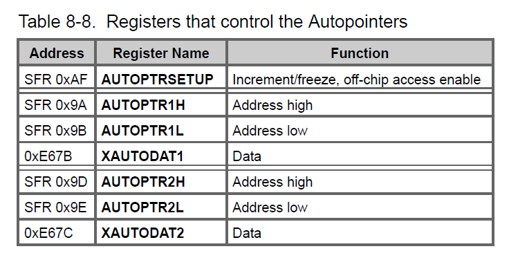

Bulkloop Example
USB Bulk传输示例
Code Position
代码位置（根据自己的安装目录查看）：C:\Cypress\USB\CY3684_EZ-USB_FX2LP_DVK\1.1\Firmware\Bulkloop
参考文档
文档位置（根据自己的安装目录查看）：
C:\Cypress\USB\CY3684_EZ-USB_FX2LP_DVK\1.1\Documentation\EZ-USB(R) Development Kit User Guide.pdfGetting Start with example Bulkloop fail: To avoid this problem, the following two lines implemented in the firmware must be commented out.
EZUSB_WriteI2C(LED_ADDR, 0x01, &(Digit[AlternateSetting])); EZUSB_WaitForEEPROMWrite(LED_ADDR);
修改源代码
C:\Cypress\USB\CY3684_EZ-USB_FX2LP_DVK\1.1\Firmware\Bulkloop\Fx2.h：不知道为什么Keil编辑器里打不开，要另外用文本编辑器打开[...省略] // #define ENABLE_7_SEG_DISPLAY extern int start_7_seg_display; [...省略]
Device Bulkloop Test
设备管理器查看设备
查看设备枚举信息
Bulk Out 
Bulk In 
设备描述符dscr.a51
Descriptor Info
<DEVICE> FriendlyName="Cypress FX2LP Sample Device" Manufacturer="Cypress" Product="EZ-USB" SerialNumber="" Configurations="1" MaxPacketSize="64" VendorID="04 B4" ProductID="10 04" Class="00h" SubClass="00h" Protocol="00h" BcdDevice="00 00" BcdUSB="02 00" <CONFIGURATION> Configuration="0" ConfigurationValue="1" Attributes="80h" Interfaces="1" DescriptorType="2" DescriptorLength="9" TotalLength="32" MaxPower="50" <INTERFACE> Interface="0" InterfaceNumber="0" AltSetting="0" Class="FFh" Subclass="00h" Protocol="0" Endpoints="2" DescriptorType="4" DescriptorLength="9" <ENDPOINT> Type="BULK" Direction="OUT" Address="02h" Attributes="02h" MaxPktSize="512" DescriptorType="5" DescriptorLength="7" Interval="0" </ENDPOINT> <ENDPOINT> Type="BULK" Direction="IN" Address="86h" Attributes="02h" MaxPktSize="512" DescriptorType="5" DescriptorLength="7" Interval="0" </ENDPOINT> </INTERFACE> </CONFIGURATION> </DEVICE>
Source Code
;;----------------------------------------------------------------------------- ;; File: dscr.a51 ;; Contents: This file contains descriptor data tables. ;; ;; $Archive: /USB/Examples/Fx2lp/bulkloop/dscr.a51 $ ;; $Date: 9/01/03 8:51p $ ;; $Revision: 3 $ ;; ;; ;;----------------------------------------------------------------------------- ;; Copyright 2003, Cypress Semiconductor Corporation ;;-----------------------------------------------------------------------------;;----------------------------------------------------------------------------- ;; 相当于是宏定义 DSCR_DEVICE equ 1 ;; Descriptor type: Device DSCR_CONFIG equ 2 ;; Descriptor type: Configuration DSCR_STRING equ 3 ;; Descriptor type: String DSCR_INTRFC equ 4 ;; Descriptor type: Interface DSCR_ENDPNT equ 5 ;; Descriptor type: Endpoint DSCR_DEVQUAL equ 6 ;; Descriptor type: Device Qualifier DSCR_DEVICE_LEN equ 18 DSCR_CONFIG_LEN equ 9 DSCR_INTRFC_LEN equ 9 DSCR_ENDPNT_LEN equ 7 DSCR_DEVQUAL_LEN equ 10 ET_CONTROL equ 0 ;; Endpoint type: Control ET_ISO equ 1 ;; Endpoint type: Isochronous ET_BULK equ 2 ;; Endpoint type: Bulk ET_INT equ 3 ;; Endpoint type: Interrupt public DeviceDscr, DeviceQualDscr, HighSpeedConfigDscr, FullSpeedConfigDscr, StringDscr, UserDscr DSCR SEGMENT CODE PAGE ;;----------------------------------------------------------------------------- ;; Global Variables ;;----------------------------------------------------------------------------- rseg DSCR ;; locate the descriptor table in on-part memory. ;; db/dw解释 ;; http://www.keil.com/support/man/docs/a51/a51_st_db.htm DeviceDscr: db DSCR_DEVICE_LEN ;; Descriptor length db DSCR_DEVICE ;; Decriptor type dw 0002H ;; Specification Version (BCD) db 00H ;; Device class db 00H ;; Device sub-class db 00H ;; Device sub-sub-class db 64 ;; Maximum packet size dw 0B404H ;; Vendor ID dw 0410H ;; Product ID (Sample Device) dw 0000H ;; Product version ID db 1 ;; Manufacturer string index db 2 ;; Product string index db 0 ;; Serial number string index db 1 ;; Number of configurations DeviceQualDscr: db DSCR_DEVQUAL_LEN ;; Descriptor length db DSCR_DEVQUAL ;; Decriptor type dw 0002H ;; Specification Version (BCD) db 00H ;; Device class db 00H ;; Device sub-class db 00H ;; Device sub-sub-class db 64 ;; Maximum packet size db 1 ;; Number of configurations db 0 ;; Reserved HighSpeedConfigDscr: db DSCR_CONFIG_LEN ;; Descriptor length db DSCR_CONFIG ;; Descriptor type db (HighSpeedConfigDscrEnd-HighSpeedConfigDscr) mod 256 ;; Total Length (LSB) db (HighSpeedConfigDscrEnd-HighSpeedConfigDscr) / 256 ;; Total Length (MSB) db 1 ;; Number of interfaces db 1 ;; Configuration number db 0 ;; Configuration string db 10000000b ;; Attributes (b7 - buspwr, b6 - selfpwr, b5 - rwu) db 50 ;; Power requirement (div 2 ma) ;; Interface Descriptor db DSCR_INTRFC_LEN ;; Descriptor length db DSCR_INTRFC ;; Descriptor type db 0 ;; Zero-based index of this interface db 0 ;; Alternate setting db 2 ;; Number of end points db 0ffH ;; Interface class db 00H ;; Interface sub class db 00H ;; Interface sub sub class db 0 ;; Interface descriptor string index ;; Endpoint Descriptor db DSCR_ENDPNT_LEN ;; Descriptor length db DSCR_ENDPNT ;; Descriptor type db 02H ;; Endpoint number, and direction db ET_BULK ;; Endpoint type db 00H ;; Maximun packet size (LSB) db 02H ;; Max packect size (MSB) db 00H ;; Polling interval ;; Endpoint Descriptor db DSCR_ENDPNT_LEN ;; Descriptor length db DSCR_ENDPNT ;; Descriptor type db 86H ;; Endpoint number, and direction db ET_BULK ;; Endpoint type db 00H ;; Maximun packet size (LSB) db 02H ;; Max packect size (MSB) db 00H ;; Polling interval HighSpeedConfigDscrEnd: FullSpeedConfigDscr: db DSCR_CONFIG_LEN ;; Descriptor length db DSCR_CONFIG ;; Descriptor type db (FullSpeedConfigDscrEnd-FullSpeedConfigDscr) mod 256 ;; Total Length (LSB) db (FullSpeedConfigDscrEnd-FullSpeedConfigDscr) / 256 ;; Total Length (MSB) db 1 ;; Number of interfaces db 1 ;; Configuration number db 0 ;; Configuration string db 10000000b ;; Attributes (b7 - buspwr, b6 - selfpwr, b5 - rwu) db 50 ;; Power requirement (div 2 ma) ;; Interface Descriptor db DSCR_INTRFC_LEN ;; Descriptor length db DSCR_INTRFC ;; Descriptor type db 0 ;; Zero-based index of this interface db 0 ;; Alternate setting db 2 ;; Number of end points db 0ffH ;; Interface class db 00H ;; Interface sub class db 00H ;; Interface sub sub class db 0 ;; Interface descriptor string index ;; Endpoint Descriptor db DSCR_ENDPNT_LEN ;; Descriptor length db DSCR_ENDPNT ;; Descriptor type db 02H ;; Endpoint number, and direction db ET_BULK ;; Endpoint type db 40H ;; Maximun packet size (LSB) db 00H ;; Max packect size (MSB) db 00H ;; Polling interval ;; Endpoint Descriptor db DSCR_ENDPNT_LEN ;; Descriptor length db DSCR_ENDPNT ;; Descriptor type db 86H ;; Endpoint number, and direction db ET_BULK ;; Endpoint type db 40H ;; Maximun packet size (LSB) db 00H ;; Max packect size (MSB) db 00H ;; Polling interval FullSpeedConfigDscrEnd: StringDscr: StringDscr0: db StringDscr0End-StringDscr0 ;; String descriptor length db DSCR_STRING db 09H,04H StringDscr0End: StringDscr1: db StringDscr1End-StringDscr1 ;; String descriptor length db DSCR_STRING db 'C',00 db 'y',00 db 'p',00 db 'r',00 db 'e',00 db 's',00 db 's',00 StringDscr1End: StringDscr2: db StringDscr2End-StringDscr2 ;; Descriptor length db DSCR_STRING db 'E',00 db 'Z',00 db '-',00 db 'U',00 db 'S',00 db 'B',00 StringDscr2End: UserDscr: dw 0000H end
寄存器定义头文件
代码位置（根据自己的安装目录查看）：
C:\Cypress\USB\CY3684_EZ-USB_FX2LP_DVK\1.1\Target\Inc\fx2regs.h寄存器定义说明：Absolute Variable Location
volatile用于防止相关变量被优化，防止编译器对寄存器读写操作优化导致数据写入过程被忽略。示例 CPUCS寄存器：
[...省略] EXTERN xdata volatile BYTE CPUCS _AT_ 0xE600; // Control & Status [...省略] /* CPU Control & Status Register (CPUCS) */ #define bmPRTCSTB bmBIT5 #define bmCLKSPD (bmBIT4 | bmBIT3) #define bmCLKSPD1 bmBIT4 #define bmCLKSPD0 bmBIT3 #define bmCLKINV bmBIT2 #define bmCLKOE bmBIT1 #define bm8051RES bmBIT0 [...省略]
Autopointers
《EZ-USB(R) Technical Reference Manual.pdf》 —— 8.8 Autopointers(Page 96)

Bulkloop
[...省略]
//-----------------------------------------------------------------------------
// Task Dispatcher hooks
// The following hooks are called by the task dispatcher.
//-----------------------------------------------------------------------------
void TD_Init(void) // Called once at startup
{
BYTE dum; // For the LEDS
CPUCS = ((CPUCS & ~bmCLKSPD) | bmCLKSPD1) ; // 48 MHz CPU clock
// Turn off all 4 LEDS
dum = D2OFF;
dum = D3OFF;
dum = D4OFF;
dum = D5OFF;
// EP2CFG & EP6CFG configure our two endpoints, EP2-OUT and EP6-IN
// b7: Valid
// b6: DIR (0=OUT, 1=IN)
// b[5:4] Type (01=ISO, 10=BULK, 11=INT)
// b3: Size (0=512, 1=1024 bytes)
// b2: 0
// b[1:0] Buffering (00=quad, 10=double, 11=triple)
//
EP2CFG = 0xA2; // Valid, BULK-OUT, 512 byte buffer, double-buffered
SYNCDELAY; // Some regs take longer to update, see TRM Section 15.14.
EP6CFG = 0xE2; // Valid, BULK-IN, 512 byte buffer, double-buffered
SYNCDELAY;
// OUT endpoints do not come up armed
// Since the endpoint is double buffered we must write dummy byte counts twice
EP2BCL = 0x80; // arm EP2OUT by writing byte count w/skip.
SYNCDELAY;
EP2BCL = 0x80; // again
SYNCDELAY;
// enable dual autopointer feature
AUTOPTRSETUP |= 0x01;
USBIE |= bmSOF; // Enable the SOF IRQ to serve as LED timers
EPIE = bmEP6IRQ | bmEP2IRQ; // Enable EP6 and EP2 Interrupts to turn on transfer LEDS
}
void TD_Poll(void) // Called repeatedly while the device is idle
{
WORD i;
WORD count;
// BYTE dummy_LED2; // ***For the LED
BYTE waiting_inpkts;
#ifdef ENABLE_7_SEG_DISPLAY
if(start_7_seg_display)
{
// update 7-seg readout with number of IN packets waiting for transfer to the host
waiting_inpkts = (EP6CS & 0xF0)>>4;
EZUSB_WriteI2C(LED_ADDR, 0x01, &(Digit[waiting_inpkts]));
EZUSB_WaitForEEPROMWrite(LED_ADDR);
}
#endif
// Transfer EP6-OUT buffer to EP2-IN buffer when there is a packet in one of the EP6-OUT buffers, AND
// there is an available EP2-IN buffer. The FIFO status flags update after full packets are transferred.
// Therefore EP2-OUT "Not Empty" means a packet is available, and "EP6-IN "Not Full" means there is an
// available buffer. Using the flags this way handles any packet size and takes multiple buffering
// into account.
if(!(EP2468STAT & bmEP2EMPTY)) // Is EP2-OUT buffer not empty (has at least one packet)?
{
if(!(EP2468STAT & bmEP6FULL)) // YES: Is EP6-IN buffer not full (room for at least 1 pkt)?
{
/*
#define AUTOPTR1H AUTOPTRH1 // for backwards compatibility with examples
#define AUTOPTR1L AUTOPTRL1 // for backwards compatibility with examples
#define APTR1H AUTOPTRH1 // for backwards compatibility with examples
#define APTR1L AUTOPTRL1 // for backwards compatibility with examples
// this is how they are defined in the TRM
sfr AUTOPTRH1 = 0x9A;
sfr AUTOPTRL1 = 0x9B;
sfr AUTOPTRH2 = 0x9D;
sfr AUTOPTRL2 = 0x9E;
*/
APTR1H = MSB( &EP2FIFOBUF );
APTR1L = LSB( &EP2FIFOBUF );
AUTOPTRH2 = MSB( &EP6FIFOBUF );
AUTOPTRL2 = LSB( &EP6FIFOBUF );
count = (EP2BCH << 8) + EP2BCL;
// loop EP2OUT buffer data to EP6IN
for( i = 0; i < count; i++ )
{
/*
EXTERN xdata volatile BYTE XAUTODAT1 _AT_ 0xE67B; // Autoptr1 MOVX access
EXTERN xdata volatile BYTE XAUTODAT2 _AT_ 0xE67C; // Autoptr2 MOVX access
#define EXTAUTODAT1 XAUTODAT1
#define EXTAUTODAT2 XAUTODAT2
*/
EXTAUTODAT2 = EXTAUTODAT1; // Autopointers make block transfers easy...
}
EP6BCH = EP2BCH; // Send the same number of bytes as received
SYNCDELAY;
EP6BCL = EP2BCL; // arm EP6IN
SYNCDELAY;
EP2BCL = 0x80; // arm EP2OUT
}
}
}